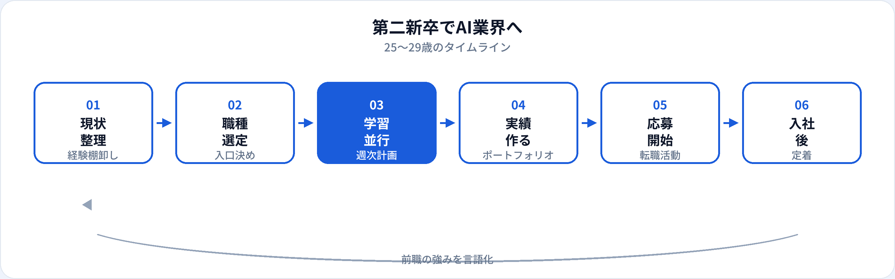

本記事での第二新卒は、新卒入社後おおむね2〜7年目・25〜29歳で、前職とは異なるAI関連職へ業界・職種転換するケースを指します。新卒一括採用の競争とは別レーンで、社会人としての経験を武器にできます。一方で、本業と学習の両立、年収のリセット、未経験枠との競合など現実的な課題もあります。本記事では、前職経験の活かし方、年齢帯別タイムライン、狙える職種、応募の進め方を2026年6月時点で整理します。
第二新卒とは（本記事の定義）
転職市場では「第二新卒」を社会人経験が浅いうちのキャリアチェンジ層と捉えることが多く、厳密な定義は企業ごとに異なります。本記事では25〜29歳・社会人2〜7年目を中心に、AI業界への転職を考える人向けに整理します。
30代以降の転職は別の戦略（ドメイン特化・即戦力寄り）になりやすいため、年齢帯が上の方は未経験者向け職種ガイドのFAQや業界別記事も参照してください。
25〜29歳でAI業界を狙う現実
有利な面は、ビジネスマナー・顧客対応・業界知識が身についていることです。不利に感じやすいのは、22歳新卒と同じ「未経験可」枠で年齢だけ上がっているように見える点ですが、採用側は「すぐに業務で信頼できるか」も見ます。第二新卒はそこが評価されやすい帯です。
転職は一発勝負の学習ではなく、6〜18か月の準備期間を見込んだマラソンと捉えると計画が立てやすくなります。
前職経験の活かし方
年齢帯別タイムライン
週10〜15時間の学習を前提とした目安です。前職がSIer・事務・営業などで大きく異なります。
| 年齢帯 | 特徴 | おすすめの進め方 | 転職までの目安 |
|---|---|---|---|
| 25〜26歳 | 学習時間を確保しやすい。未経験枠と近い | データアナリスト or 社内AI推進から。資格とポートフォリオ並行 | 6〜12か月 |
| 27〜28歳 | 責任範囲が増えがち。差別化が必要 | 前職ドメイン×データスキルで尖らせる。第二新卒歓迎求人を狙う | 9〜15か月 |
| 29歳 | 年収・役職のリセットに敏感になりやすい | 即戦力寄りの分析職 or 中堅企業のDX部門。副業実績も有効 | 12〜18か月 |
詳細な学習順序は学習ロードマップ、職種選びは文系・非エンジニア向けルートも参照してください。
狙える職種
| 職種 | 第二新卒との相性 | 詳細 |
|---|---|---|
| データアナリスト | ◎ 未経験可・第二新卒歓迎が多い | 記事へ |
| 社内AI推進・DX | ○ 現職から横入りも | 生成AIパスポート後のロードマップ |
| プロンプトエンジニア | ○ 業務設計経験と相性◎ | 記事へ |
| AIエンジニア | △ 学習期間は長め | 記事へ |
| データサイエンティスト | △ アナリスト経由が多い | 記事へ |
転職準備の流れ

本業と学習の両立
辞職してから勉強する選択もありますが、多くの場合は在職中に準備する方が安全です。
| 週あたり | 配分例 |
|---|---|
| 平日 1〜1.5h × 4日 | Python/SQLの継続学習 |
| 週末 4〜6h | ポートフォリオ制作、資格勉強 |
| 月1回 | 転職サイトで求人チェック、応募（準備が整ってから） |
副業で小さな実績を作る場合はAI副業の準備、成果物の見せ方はポートフォリオガイドを参照してください。
応募・面接のポイント
検索キーワード
「第二新卒」「未経験可」「ポテンシャル」「キャリアチェンジ」「ジュニア」＋ データ / AI / 分析。
職務経歴書
前職の成果を数値化しつつ、学習・ポートフォリオへのリンクを明記。志望動機は業界転換の理由を具体化。
面接
「なぜ今」「なぜAI」「前職で得たこと」「入社後に何をするか」の4点を一貫したストーリーに。
よくある失敗
| 失敗パターン | 対策 |
|---|---|
| いきなりAIエンジニアのみ応募 | 入口職種を広げ、段階的に狙う |
| 学習だけでポートフォリオなし | 完成品1つを最優先 |
| 前職への不満だけを語る | 前向きな動機と具体計画に |
| 年収だけで企業を選ぶ | 成長環境と3年後のスキルを確認 |
| 準備不足で早期退職 | 生活防衛資金6か月分以上を確保 |
よくある質問
第二新卒でAI業界に転職できる？
可能です。未経験可の分析職や第二新卒歓迎のジュニアポジションが狙い目です。ドメイン知識とポートフォリオで差別化してください。
25〜29歳で転職するのにどのくらいかかる？
入口職種なら6〜12か月、AIエンジニア寄りなら12〜18か月が目安です。本業と並行する前提で計画を立ててください。
年齢は不利になる？
新卒枠では不利に感じることもありますが、ビジネス経験は評価される求人も多いです。第二新卒歓迎の求人を積極的に狙いましょう。
辞めてから勉強すべき？
在職中に準備する方が一般的です。生活資金と学習時間が確保できるなら短期の専念期間も選択肢です。
SIer出身の第二新卒は？
SIer・SESからAIスタートアップへの記事も参照してください。エンジニア経験は活かしつつ、プロダクト志向のポートフォリオが鍵です。